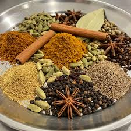
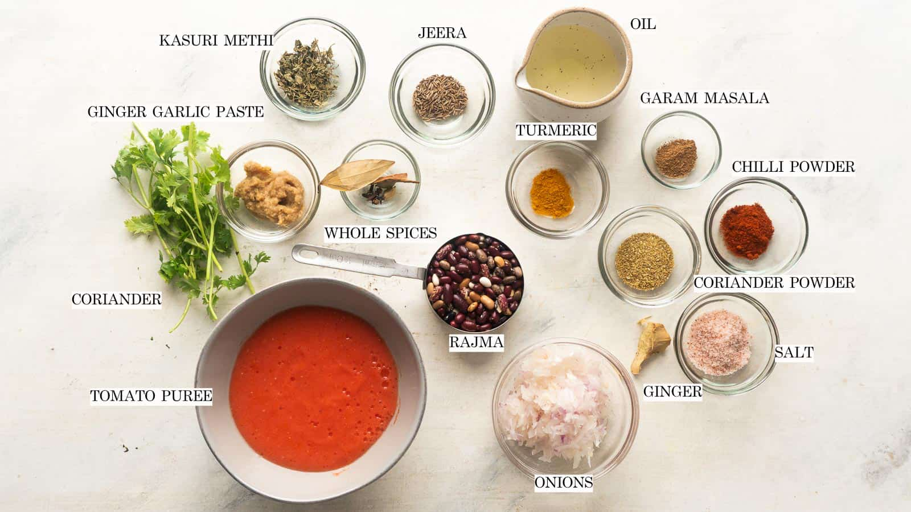

INDIAN STYLE MASALA RAJMA

Ingredients (whole spices):
- 2 tbsp coriander seeds
- 1 tbsp cumin seeds
- 8–10 dried red chilies (adjust for spice level)
- 1 tbsp black peppercorns
- 5–6 cloves
- 2–3 green cardamom pods
- 1 small piece cinnamon (about 1 inch)
- 1 tsp fennel seeds
- 1 bay leaf(Tej pata)

Step-by-Step Method
Step 1: Dry Roasting :
- Heat a heavy pan on low flame.
- all the whole spices except nutmeg.
- Dry roast slowly for 3–4 minutes,stirring continuously.
- Spices should become fragrant,not burnt.
- Turn off the heat and let them cool completely.
Step 2: Grinding :
- Add cooled spices and nutmeg to a mixer or spice grinder.
- Grind into a fine powder
- If needed, grind in batches.

Step 3: Soak & Cook Rajma :
- Wash rajma and soak overnight (8–10 hours) in enough water
- Drain soaking water, rinse again.
- Pressure cook rajma with 3 cups water & salt
- Cook for 5–6 whistles (or until soft).
Make the masala
- Heat oil/ghee in a pan.
- Add cumin seeds and let them crackle.
- Add chopped onions and sauté until golden.
- Add ginger-garlic paste, cook for 1 minute.
- Add tomatoes and cook until oil separates.
Final & Finish Step
- Add turmeric, chili powder, coriander powder, and salt.
- Mix well and cook for 1–2 minutes.
- Add cooked rajma along with some of its water.
- Mash a few rajma lightly to thicken the gravy.
- Simmer for 10–15 minutes on low heat.
- Add garam masala and mix.
- Garnish with fresh coriander leaves.
Serving time
- Steamed rice 🍚
- Jeera rice
- Roti or naan